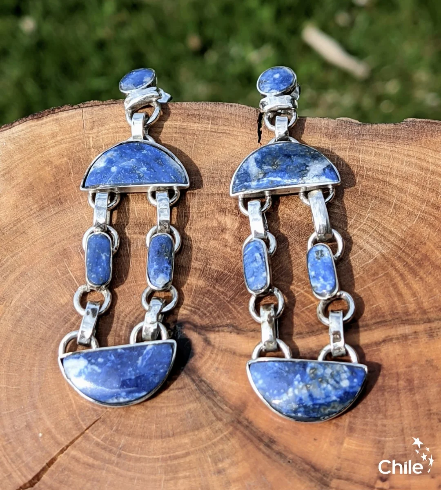
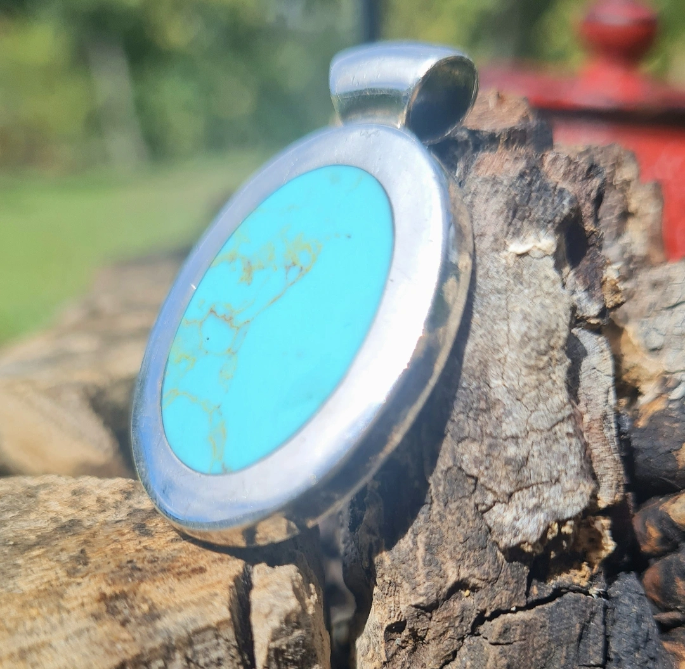
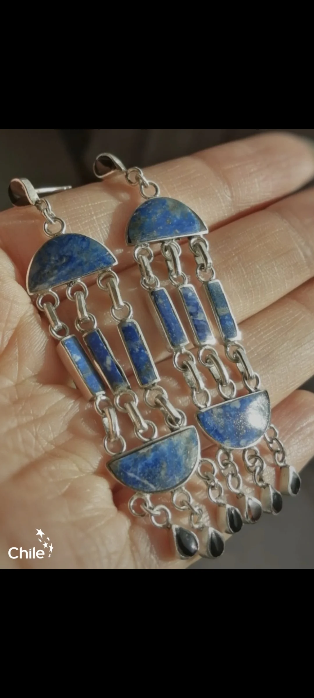
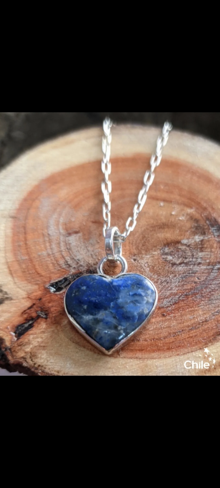
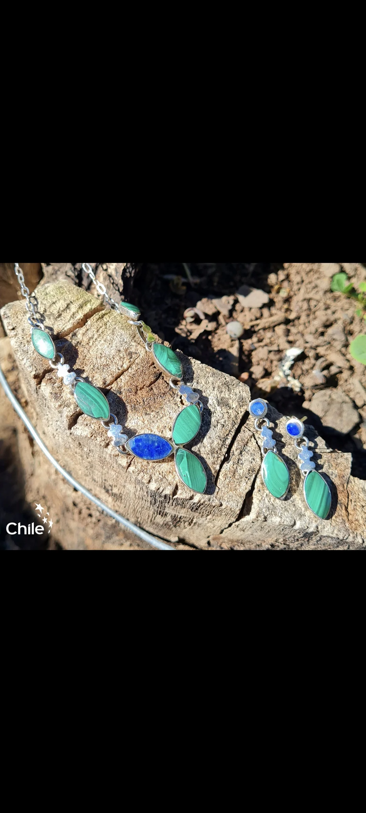

Copihue y naturaleza
"Elegancia natural en cada pétalo."Piezas inspiradas en la flor nacional de Chile, elaboradas en plata y complementadas con lapislázuli y otras piedras naturales.
Ver piezasJoyas hechas a mano con historia, identidad y tradición.
Descubre la belleza de la joyería artesanal inspirada en la Región del Maule y la ciudad de Talca. Cada pieza es creada a mano con dedicación, rescatando símbolos de nuestra cultura campestre, nuestro patrimonio y nuestras raíces.
"Lleva contigo un pedacito de nuestra historia."
Aura Nativa Orfebrería es una empresa familiar dedicada a la creación de joyas artesanales con identidad histórica y regional. Desde Talca, desarrollamos piezas de plata inspiradas en la riqueza cultural, natural y patrimonial de la Región del Maule.
Nuestros diseños incorporan elementos representativos de nuestra tierra, como la arquitectura local, los monumentos, los paisajes, los personajes, la flora, la fauna y las tradiciones del campo chileno.
Trabajamos con técnicas tradicionales de orfebrería, lapidación y engaste, utilizando piedras naturales y materiales como lapislázuli, jaspe, piedra cruz, crin y otras aplicaciones cuidadosamente seleccionadas.
Cada pieza es elaborada a mano, por lo que puede presentar pequeñas variaciones que la convierten en una creación auténtica e irrepetible. Para nosotros, una joya no es solamente un objeto decorativo: es una forma de conservar una historia, expresar una identidad y crear una conexión entre quien la fabrica y quien decide llevarla consigo.
Somos una empresa familiar de Talca con más de una década de experiencia en la creación de joyas de plata hechas a mano. Combinamos técnicas tradicionales de orfebrería con piedras naturales y símbolos de nuestra cultura para diseñar piezas únicas, cargadas de historia, belleza y significado.
Explora nuestras colecciones temáticas inspiradas en la flora, las costumbres campestres y la gemología chilena.

Piezas inspiradas en la flor nacional de Chile, elaboradas en plata y complementadas con lapislázuli y otras piedras naturales.
Ver piezas
Joyas inspiradas en espuelas, sombreros de huaso, caballos, aperos y elementos característicos de la identidad rural chilena.
Ver piezasDiseños que destacan la profundidad y el color del lapislázuli, combinando el azul natural de la piedra con detalles artesanales en plata.
Ver piezas
Piezas inspiradas en lugares, monumentos, arquitectura y elementos históricos representativos de Talca y la Región del Maule.
Ver piezas
Elaboramos piezas por encargo, transformando una idea, un recuerdo o un símbolo especial en una joya única.
Cotizar a medidaFiltra por categoría o busca tu estilo preferido. Cada joya es elaborada minuciosamente a mano.
Detrás de cada pieza existen horas de dedicación, precisión y trabajo manual. Te invitamos a conocer parte del proceso que transforma la plata, las piedras y las ideas en joyas con identidad.
Observa cómo una idea comienza en el papel y se transforma, paso a paso, en una pieza de plata elaborada completamente a mano.
La precisión de la sierra manual moldeando contornos, pétalos y símbolos criollos en la lámina de plata.
Selección y tallado artesanal del lapislázuli chileno para ajustarlo perfectamente al bisel de plata.
El momento en que el metal recobra su máximo brillo y textura para dar luz a la creación definitiva.
Cuidamos, restauramos y transformamos tus joyas para prolongar su historia. También desarrollamos piezas personalizadas de acuerdo con tus ideas y necesidades.
Devolvemos vida a tus joyas mediante reparaciones realizadas cuidadosamente en nuestro taller.
Realizamos ajustes, limpieza, pulido y mantenimiento general para conservar tus piezas en buenas condiciones.
Trabajamos con técnicas de engaste para colocar, asegurar o reemplazar piedras en distintos tipos de joyas.
Rediseñamos joyas antiguas o en desuso para convertirlas en nuevas piezas con valor personal y contemporáneo.
Creamos joyas únicas a partir de una idea, una fotografía, un símbolo, una piedra o un recuerdo especial.
Trabajamos a pedido. Cada solicitud es evaluada de acuerdo con su diseño, materiales, complejidad y plazo de elaboración.
Envíanos una descripción, una fotografía de referencia o explícanos el significado que deseas representar.
Evaluamos los materiales, la técnica, el tamaño, la factibilidad y el tiempo necesario para fabricar la pieza.
Cada etapa se realiza manualmente, cuidando los detalles y respetando las características acordadas.
Recibes una joya creada especialmente para ti, acompañada de las recomendaciones necesarias para su cuidado.
Los colores, vetas y formas de las piedras naturales pueden variar. Estas diferencias son parte de su origen y hacen que cada pieza sea única.
Una historia de oficio, esfuerzo y pasión por la joyería artesanal que ha trascendido generaciones desde Talca y la zona central de Chile.

Los inicios del taller familiar, donde la precisión del oficio relojero y la pasión por moldear metales preciosos sentaron las bases de nuestra tradición.
Fuente: Archivo Histórico Familiar Madrigal
Décadas dedicadas a la atención personalizada, restauración de piezas queridas y el aprendizaje continuo de técnicas artesanales.
Fuente: Memorias del Taller Tradicional
Registros antiguos de modelos de anillos y grabados a mano que inspiraron nuestros métodos de forjado y cincelado clásico.
Fuente: Catálogos Patrimoniales de Orfebrería
El compromiso afectivo y la entrega de conocimientos transmitidos de generación en generación que dieron origen a Aura Nativa Orfebrería.
Fuente: Legado Familiar MauleDesde tiempos antiguos, las joyas han acompañado momentos importantes y han representado sentimientos, vínculos e historias. Una pieza puede simbolizar amor, fuerza, protección, identidad, coraje, memoria o pertenencia.
En Aura Nativa, cada diseño busca crear una conexión personal y cultural. Las piedras naturales también han sido tradicionalmente asociadas a distintos significados simbólicos, los que pueden variar de acuerdo con cada cultura y persona.
Sí. Nuestras piezas son elaboradas artesanalmente, por lo que cada una puede presentar características y detalles únicos.
Sí. Creamos piezas personalizadas y también podemos fabricar algunos diseños del catálogo por encargo.
Sí. Puedes enviarnos tus ideas por WhatsApp o Instagram. Revisaremos la factibilidad del diseño y te orientaremos sobre materiales, plazos y valores.
Sí. Evaluamos reparaciones, ajustes, limpieza, mantenimiento, colocación de piedras y transformaciones de joyas.
No. Las piedras naturales pueden variar en color, vetas, brillo y forma. Estas diferencias hacen que cada pieza sea auténtica.
Nos encontramos en el Mercado Provisorio de Talca, local 66, sector 2 Norte con 5 y 6 Oriente.
Atendemos de lunes a viernes, de 10:00 a 17:00 horas.
Puedes escribirnos directamente por WhatsApp o Instagram, indicando el nombre o enviando una fotografía de la joya.
Conoce nuestras piezas, conversa con nosotros y descubre el trabajo artesanal de Aura Nativa Orfebrería.
Mercado Provisorio de Talca, 2 Norte entre 5 y 6 Oriente, Local 66, Talca, Región del Maule.
Lunes a viernes: 10:00 a 17:00 horas.
Los horarios pueden variar durante días festivos. Consulta antes de visitarnos.+56 9 9512 7168
@auranativa.orfebreria